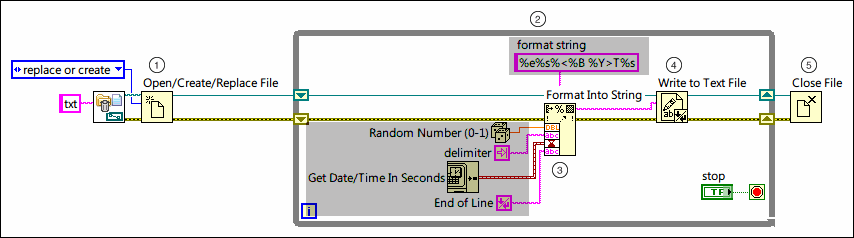

Streaming Data to Spreadsheet Files
Use disk streaming when you require multiple write operations to a spreadsheet file. Disk streaming reduces the number of times LabVIEW interacts with the operating system to open and close a file. You can use disk streaming while formatting data as a spreadsheet string and writing the string to a file.
What to Use
Use the following block diagram objects to format data and to stream the data to a file.
What to Do
Create the following block diagram to format data of different data types as a spreadsheet string and to stream the string to a file.
Customize the gray sections for your unique programming goals.

The following list describes important details about the previous diagram:
 | Place the Open/Create/Replace File function and Close File function outside the While Loop to create a typical disk streaming operation. |
| The While Loop enables this VI to continuously format and write data to a file without the overhead associated with opening and closing the file in each iteration. Use shift registers to pass values from previous iterations to the next iteration. |
 | Wire input parameters from outside the While Loop to the input 1..n inputs of the Format Into String function. You can wire delimiters, such as end-of-line constant, tab constant, and so on, as input parameters to separate input data. Specify the format string input using format specifiers to format the input parameters as a spreadsheet string.
 |
Note You can also use the Format Into File function in place of the Format Into String function and Write to Text File function to format data as text and write the text to a file. |
|
 | The Write to Text File function writes the spreadsheet string to the file. |
You can improve the performance of disk streaming by buffering data using a shift register. First, initialize the shift register with a buffer of data. Next, write data to the buffer. When the buffer is full, write the buffer to disk.
Examples
Refer to the Tab-Delimited Data project in the labview\examples\File IO\Spreadsheet\Tab-Delimited Data directory for an example of streaming data to spreadsheet files. This example uses the Array to Spreadsheet String function which converts data of one data type to a spreadsheet string and writes the string to a file.
 Open example
Open example  Find related examples
Find related examples
Refer to the Buffered Stream to Tab-Delimited Text File VI in the labview\examples\File IO\Spreadsheet\Tab-Delimited Data directory for an example of buffering data when streaming data to spreadsheet files.
Open example Find related examples
Related Topics